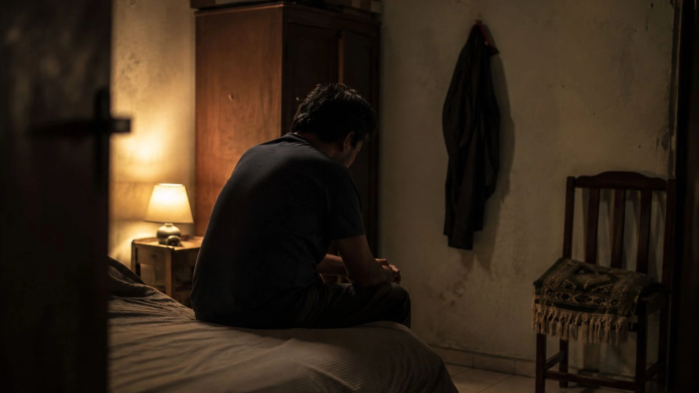
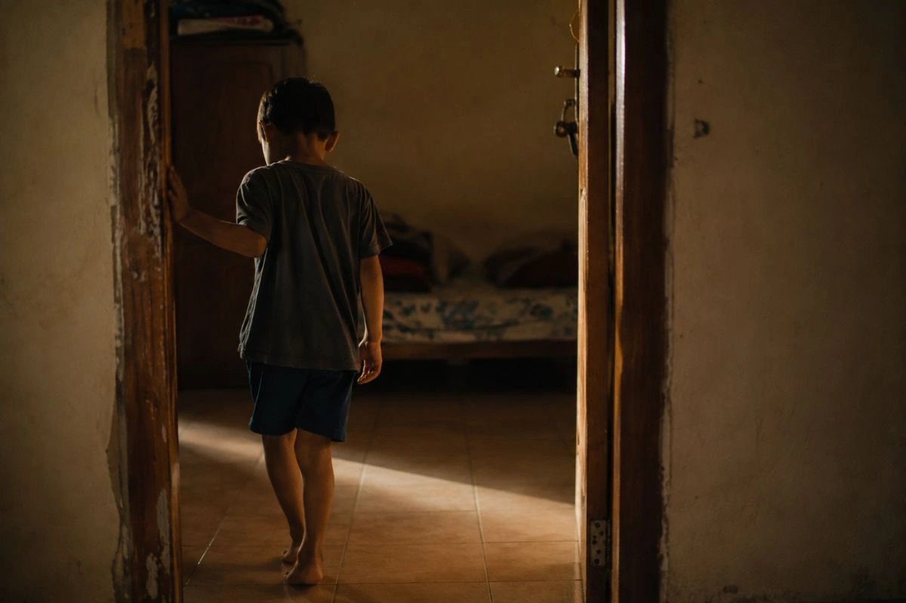
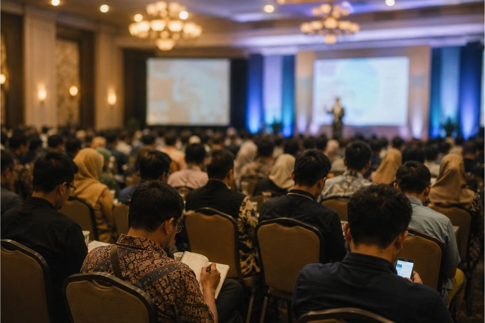
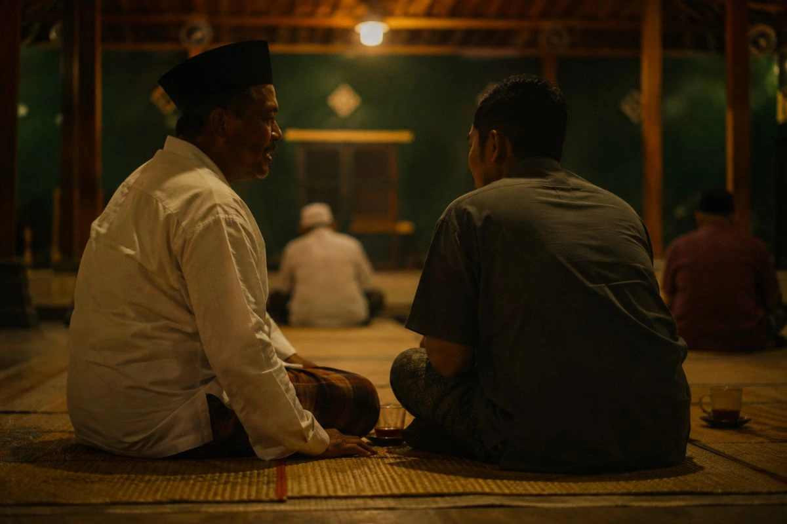
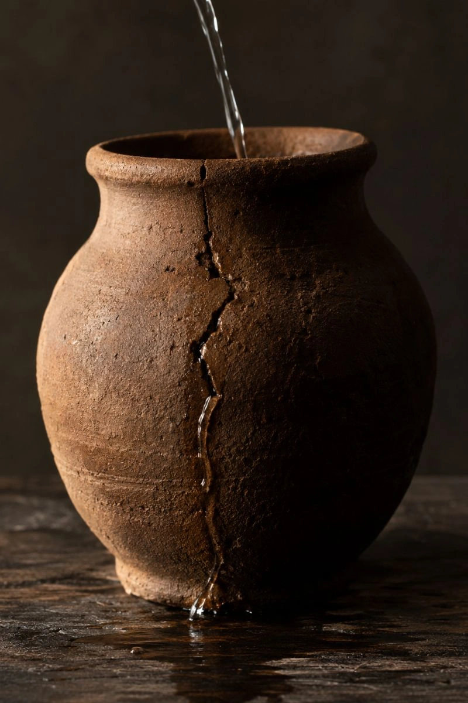
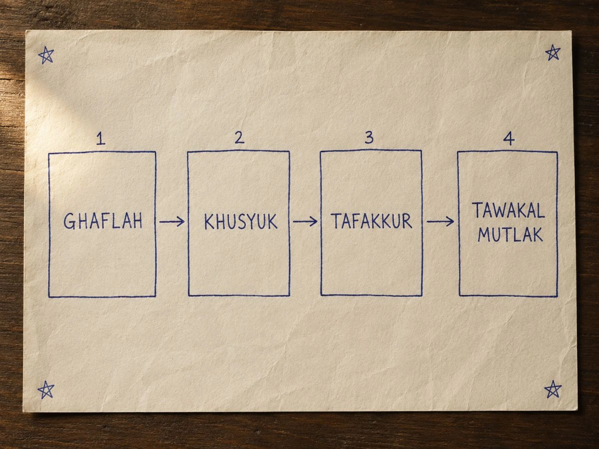
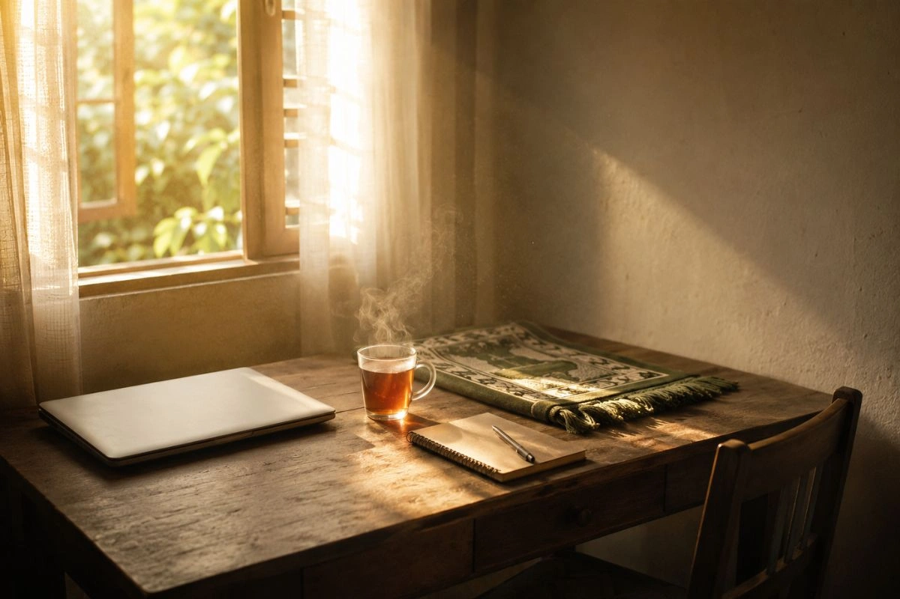
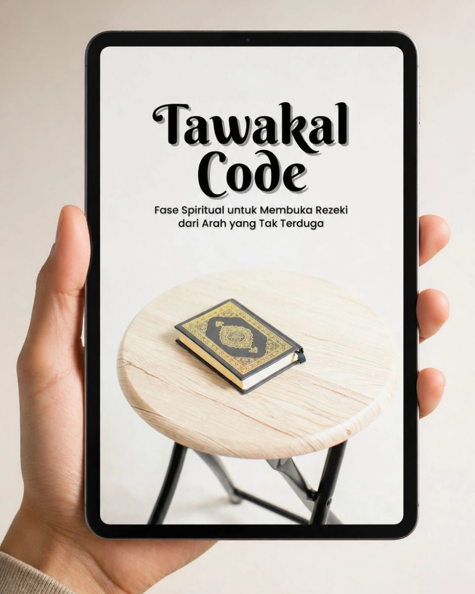
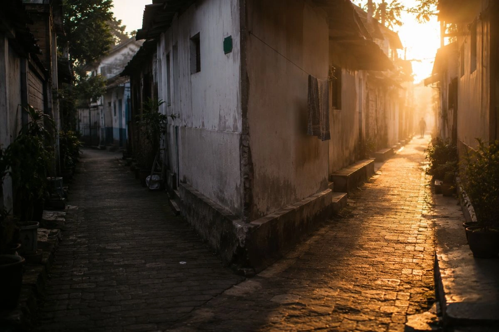

Seorang Kyai Pengusaha Membisikkan Satu Kalimat yang Menjelaskan Kenapa Aku Kerja Mati-Matian Tapi Uangku Cuma Numpang Lewat… dan Kalimat Itu Mengubah Segalanya

Aku pura-pura ketiduran.
Malam itu istriku masuk kamar, duduk di pinggir kasur, dan bilang pelan, “Yah… SPP Bilal nunggak dua bulan. Tadi wali kelasnya WA aku lagi.”
Aku merem. Nafasku aku atur biar kedengeran kayak orang tidur pules.
Padahal jantungku gedebukan.
Bukan karena aku gak denger. Tapi karena aku gak punya jawaban.
Laki-laki macam apa yang pura-pura tidur biar gak ditanya istrinya sendiri soal uang sekolah anaknya?
Aku. Aku laki-laki itu.
Dan yang paling bikin sesek… besok paginya aku tetap bangun jam 5, berangkat paling pagi, pulang paling malam. Sholat jalan. Ikhtiar jalan. Gak ada satu hari pun aku males-malesan.
Tapi di titik itu aku sadar satu hal yang gak berani aku akuin selama bertahun-tahun:
Masalahku bukan kurang kerja keras.
Ada yang bocor. Dan bocornya bukan di dompetku.
Tiga minggu setelah malam itu, seorang Kyai pengusaha di sebuah majelis bilang satu kalimat yang bikin aku kayak ditampar. Kalimat itu menjelaskan kenapa uangku selalu cuma numpang lewat, kenapa peluang selalu gagal pas tinggal selangkah lagi, dan kenapa dada ini gak pernah berhenti sesek walau ibadah gak pernah bolong.
Tapi sebelum aku ceritain kalimat itu, kamu perlu tahu dulu seberapa dalam lubang yang aku gali sendiri…
Pelan-Pelan, “Mepet Biasa” Itu Mulai Makan Hidupku
Biar aku jujur dari awal. Kondisiku dulu gak langsung separah itu.
Awalnya ya cuma “mepet biasa”. Tanggal 25 rekening mulai tipis, tanggal 1 gajian atau ada pembayaran masuk, aman lagi. Yang penting muter, pikirku. Namanya juga hidup.
Tapi pelan-pelan, tanpa aku sadar, “mepet biasa” itu mulai makan hidupku sepotong demi sepotong.
Yang pertama hilang: nongkrong bareng temen-temen.
Dulu hampir tiap Jumat malam aku ngumpul sama temen-temen di cafe langganan kami. Ngopi, ngobrol ngalor-ngidul, ketawa-ketawa sampai gak kerasa udah tengah malam. Sekarang tiap ada yang ngajak, jawabanku selalu sama: “Duluan aja, aku masih ada kerjaan.”
Padahal bukan kerjaan.
Aku cuma gak sanggup keluar 60-70 ribu buat segelas kopi dan cemilan… sementara di rumah SPP anakku belum kebayar. Dan yang lebih nyesek dari gak bisa bayarnya: rasa takut kalau pas nongkrong nanti giliran aku yang gak bisa ikut split bill, terus semua orang jadi tau kondisiku.
Lama-lama mereka berhenti ngajak.
Terus grup WA keluarga besar. Aku mute. Udah hampir setahun.
Bukan karena benci. Tapi tiap ada yang share undangan nikahan atau info arisan keluarga, yang kepikir duluan di otakku bukan orangnya… tapi amplopnya. Kondangan sepupu sendiri aku gak dateng. Titip amplop 100 ribu lewat ibuku, terus bilang lagi ada acara kantor.
Gak ada acara kantor. Aku di rumah. Rebahan. Mikirin cicilan.
Terus yang paling aku sesali sampai sekarang: anakku.
Suatu sore Bilal narik-narik bajuku, minta jajan es krim. Lima ribu. CUMA lima ribu. Dan aku bentak dia.
“Bilal! Ayah lagi gak ada uang! Jangan minta-minta terus!”
Dia diem. Matanya kaca-kaca. Terus dia masuk kamar pelan-pelan tanpa nangis.

Malemnya aku nangis sendirian di kamar mandi. Bukan karena lima ribu. Tapi karena aku sadar rasa panik ini udah berubah jadi monster yang nyakitin orang yang paling aku sayang. Anakku gak salah apa-apa. Dia cuma pengen es krim.
Dan tidurku? Jangan tanya.
Hampir tiap malam aku kebangun jam 2 atau jam 3 pagi. Bukan buat tahajud. Tapi karena otakku otomatis nyala, ngitung-ngitung: cicilan tanggal 5, SPP tanggal 10, listrik, kontrakan… Angka-angka itu muter kayak kaset rusak sampai adzan Subuh.
Badan di kasur. Pikiran di mana-mana.
Yang paling aneh… ibadahku gak bolong. Sholat lima waktu jalan. Doa habis sholat panjang. Tapi rasanya… kosong. Mulutku komat-kamit minta rezeki, tapi hatiku sibuk ngitung utang. Habis salam, sesek itu langsung balik lagi. Kayak gak pernah sholat.
Aku mulai nanya dalam hati, pelan-pelan, takut-takut:
“Ya Allah… aku kurang apa lagi?”
Dan malam waktu aku pura-pura tidur itu? Itu titik terendahnya.
Bukan karena gak punya uangnya. Tapi karena malam itu aku sadar apa aja yang udah dirampas dari hidupku:
Ketenanganku. Tidurku. Temen-temenku. Kedekatanku sama anakku. Wibawaku di depan istriku. Bahkan rasa dekatku sama Allah.
Aku masih kerja keras. Masih ibadah. Tapi aku udah gak kenal orang yang tiap pagi natap balik di cermin.
Dan yang bikin frustasi… aku bukan orang yang nyerah. Aku udah nyoba benerin ini. Aku nyoba SEMUA cara yang katanya bisa ngubah nasib.
Itu yang mau aku ceritain sekarang. Karena kemungkinan besar… kamu juga udah nyoba cara-cara yang sama.
Aku Udah Nyoba Semuanya. Bener-bener… SEMUANYA.
Sebelum aku ceritain apa yang akhirnya berhasil, kamu perlu tau dulu apa aja yang gagal. Karena aku yakin kamu pernah lewat jalan yang sama.
Kerja lebih keras? Udah. Aku ambil kerjaan sampingan, tidur 4 jam sehari selama hampir setahun. Hasilnya? Penghasilan naik dikit, pengeluaran ikut naik, badan hancur, dan aku makin gampang marah di rumah. Uangnya tetap cuma numpang lewat.

Seminar motivasi? Aku pernah bayar 2,5 juta buat seminar “financial freedom” di hotel. Duduk paling depan, catat semuanya, pulang berapi-api… Tiga minggu kemudian? Balik lagi jadi orang yang sama. Ternyata semangat itu kayak parfum. Wanginya cuma bertahan beberapa hari.
Kursus bisnis online? Total hampir 4 juta buat 3 kursus berbeda. Ilmunya bagus, gak bohong. Tapi tiap mau praktek, dada ini duluan yang sesek. Takut rugi, takut gagal, takut buang uang lagi. Ilmunya numpuk, prakteknya nol.
Ganti usaha? Dua kali. Dua-duanya mati di bulan ketiga. Modal 8 juta lebih, lenyap.
Bahkan… dan ini yang paling bikin aku malu… aku pernah nyoba “matematika sedekah”. Sedekah 100 ribu sambil ngarep balik 1 juta. Kayak lagi transaksi jual-beli sama Allah. Sedekahnya jalan, hatinya ngitung terus. Gak ada yang berubah, kecuali aku yang makin kecewa.
Dzikir juga jalan. Habis sholat, komat-kamit ratusan kali. Tapi kayak yang aku bilang tadi… mulut bunyi, hati absen.
Kalau ditotal, lebih dari 15 juta lenyap buat “cara ngubah nasib”. Dan satu-satunya yang berubah cuma saldo tabunganku. Makin tipis.
Sampai akhirnya aku diajak temen ke sebuah majelis… dan di sana aku sadar kenapa SEMUA cara di atas gagal.
Bukan karena caranya salah.
Tapi karena selama ini aku benerin sesuatu yang gak rusak… dan gak pernah nyentuh satu hal yang beneran bocor.
Satu Kalimat di Majelis Itu yang Bikin Aku Kayak Ditampar
Temenku ngajak aku ke majelis Manaqib, pembacaan riwayat Syekh Abdul Qadir Jailani. Jujur, aku berangkat bukan karena semangat. Aku berangkat karena udah gak tau lagi harus ke mana.

Selesai acara, temenku ngenalin aku ke seorang Kyai. Orangnya sederhana banget. Sarungan, sandal jepit. Padahal kata temenku, beliau punya beberapa usaha yang jalan semua… tanpa keliatan ngoyo.
Kami ngobrol. Awalnya basa-basi, sampai akhirnya aku gak kuat dan cerita semuanya. Kerja mati-matian, ibadah jalan, tapi hidup mentok dan dada sesek tiap hari.
Beliau dengerin sampai selesai. Gak motong sama sekali.
Terus beliau diem agak lama… dan bilang pelan:
“Nak, rezekimu itu gak seret. Wadahmu yang bocor.”
Aku bengong.
Beliau ngelanjutin: “Rezeki itu kayak air yang dijamin terus ngalir dari atas. Yang jadi masalah bukan airnya. Wadah penampungnya… hatimu. Kalau hatimu penuh kepanikan, ketakutan, dan ngerasa semua beban dunia ada di pundakmu sendiri… itu sama kayak wadah yang retak. Dituang sebanyak apapun, ya bocor terus.”

“Kamu kerja keras, tapi bahan bakarnya rasa takut. Kamu sholat, tapi hatimu lagi ngitung utang. Kamu sedekah, tapi sambil nagih balasan. Badanmu ibadah, hatimu gak pernah ikut.”
“Dalam ilmu tasawuf, kondisi ini ada namanya: Ghaflah. Hati yang lalai karena dikuasai kepanikan dunia. Dan selama kamu ada di situ, mau ganti usaha seribu kali pun… hasilnya bakal sama.”
Deg.
Dalam satu menit, semua kegagalanku 3 tahun terakhir tiba-tiba masuk akal:
Kerja lebih keras gagal… karena yang capek badannya, yang rusak wadahnya. Seminar motivasi gagal… karena semangat gak nambal wadah yang retak. Kursus 4 juta gagal… karena ilmu sebanyak apapun gak bisa dieksekusi sama hati yang panik. Sedekahku hambar… karena wadahnya kotor sama itung-itungan.
Selama ini aku gak pernah gagal karena kurang usaha.
Aku gagal karena gak ada satu pun orang yang pernah ngasih tau aku soal ini.
Aku langsung nanya, hampir gak sabar: “Terus… cara nambal wadahnya gimana, Kyai?”
Beliau senyum. “Nah. Itu pertanyaan yang tepat.”
“Nambal Wadah Itu Ada Urutannya”
Beliau ngambil secarik kertas, terus gambar empat kotak berjejer.
“Hati manusia itu bergerak di empat fase, Nak. Ini ilmu tasawuf yang udah diajarkan Syekh Abdul Qadir Jailani ratusan tahun lalu. Bukan ilmu baru.”

Fase pertama: Ghaflah. “Ini posisimu sekarang. Hati yang dikuasai panik. Di fase ini, sekeras apapun ikhtiarmu, hasilnya bocor. Keputusanmu grasak-grusuk, jualanmu keliatan maksa, orang-orang malah menjauh.”
Fase kedua: Khusyuk. “Hati yang hadir penuh dan tenang. Bukan cuma pas sholat… tapi pas kerja, pas nawarin dagangan, pas ngambil keputusan. Di fase ini pikiranmu jernih, dan anehnya… peluang mulai keliatan di tempat yang dulu gak pernah kamu liat.”
Fase ketiga: Tafakkur. “Perenungan yang sadar. Bedanya sama overthinking: overthinking muter di rasa takut, Tafakkur melahirkan petunjuk. Di fase inilah ilham dan ide jalan keluar itu turun.”
Fase keempat, yang paling dalam: Tawakal Mutlak. “Pasrah total setelah ikhtiar maksimal. Biasanya dilatih di sepertiga malam. Orang yang nyampe fase ini… hidupnya sering dikirimi ‘kebetulan-kebetulan’ yang gak masuk logika. Rezeki dari arah yang gak pernah dia itung. Min haitsu la yahtasib.”
Terus beliau natap aku:
“Tapi inget, Nak. Ini gak bisa dilompat-lompat. Banyak orang langsung nyoba tawakal padahal hatinya masih di fase panik. Ya gak nyambung. Dzikir doang gak cukup kalau habis itu balik panik. Kerja keras doang gak cukup kalau wadahnya masih retak. Yang bikin ini bekerja adalah urutannya: bersihin dulu paniknya, bangun ketenangannya, baru serahkan hasilnya.”
“Makanya dulu ilmu ini cuma bisa dipelajari mondok bertahun-tahun. Bukan karena ilmunya susah… tapi karena butuh dibimbing urut, pelan-pelan, jadi kebiasaan.”
Aku nanya: “Kalau gak bisa mondok gimana, Kyai? Saya kerja…”
“Mulai dari yang paling sederhana. Lima menit sebelum ikhtiar. Jangan pernah mulai kerja dari hati yang panik. Tata dulu napasmu, istighfar, luruskan niatmu… baru bergerak. Lakuin itu tiap hari selama sebulan, dan liat sendiri apa yang berubah.”
Sesimpel itu? Aku hampir gak percaya.
Tapi aku udah buang 15 juta buat cara-cara yang ribet. Apa ruginya nyoba yang gratis dan cuma 5 menit?
Besok Seninnya, aku praktekin. Dan apa yang kejadian dalam 30 hari setelahnya… sampai sekarang masih susah aku percaya.
30 Hari yang Mengubah Segalanya

Senin pagi, sebelum buka laptop dan mulai ngejar target, aku duduk diem 5 menit. Napas. Istighfar. Niat. Persis kayak kata Kyai.
Jujur? Rasanya aneh. Kayak buang-buang waktu.
- Hari 1-3Gak ada keajaiban. Gak ada transferan mendadak. TAPI… ada satu yang beda: aku kerja seharian tanpa dada sesek. Baru sadar, udah bertahun-tahun aku gak pernah ngerasain kerja setenang itu.
- Hari 6Aku follow-up calon klien yang udah 2 minggu cuma nge-read chatku. Biasanya aku ngejar sambil panik, bahasaku maksa. Kali ini aku nulis dengan kepala dingin, nawarin bantuan, bukan ngemis closing. Dia bales dalam sejam. Deal.
- Hari 9Kebangun jam 3 pagi. Biasanya langsung ngitung cicilan sampai Subuh. Malam itu, untuk pertama kalinya… aku bangkit, wudhu, dan sujud. Nangis sejadi-jadinya di sepertiga malam. Dan habis itu aku tidur lagi… pules.
- Hari 14Sholatku mulai kerasa “ada isinya” lagi. Susah jelasinnya. Habis salam, tenangnya kebawa. Gak langsung buyar kayak dulu.
- Hari 17Relasi lama tiba-tiba WA. Ada proyek, dia inget aku. Nilainya hampir 2x gaji bulananku. Kebetulan? Mungkin. Tapi kebetulan kayak gini gak pernah mampir pas hatiku masih panik.
- Hari 21SPP Bilal lunas. Plus aku pulang bawa es krim. Bukan satu… satu kotak. Pas dia lari meluk aku, aku harus buang muka biar dia gak liat bapaknya mau nangis.
- Hari 24Jumat malam. Aku yang ngechat duluan di grup: “Ngopi yuk.” Dan pas bill dateng… aku yang bayarin.
- Hari 28Aku lagi di dapur, istriku tiba-tiba meluk dari belakang.
“Aku gak tau kamu ikut apaan… tapi makasih ya. Rasanya kayak suamiku yang dulu udah pulang.”
— Istri saya, malam hari ke-28
Aku diem. Gak sanggup jawab.
Dia gak nyebut uang sama sekali. Padahal justru bulan itu penghasilanku mulai naik. Yang dia kangenin ternyata bukan uangnya… tapi aku.
Malam itu aku sadar: yang berubah duluan bukan rezekiku. Hatiku dulu yang ditambal… rezekinya nyusul.
Sejak itu aku catat semua yang aku pelajari dari beliau, aku susun jadi sistem harian 30 hari yang urut, lengkap dengan ritual 5 menit, script niat, sampai amalan sepertiga malamnya. Sistem itu yang sekarang aku kasih nama:
Tawakal Code.
Dan kalau kamu ngerasain apa yang dulu aku rasain… kalau kepanikan ini udah ngerampas tidurmu, ketenanganmu, kedekatanmu sama anakmu, bahkan khusyukmu waktu sujud…
Kamu gak harus terus hidup kayak gitu.
Ternyata Bukan Cuma Aku
Sejak aku mulai bagiin sistem ini, hampir tiap minggu masuk cerita-cerita yang bikin aku merinding:
“Yang paling kerasa justru tidurnya. Dulu tiap malem kepikiran ‘bulan depan dapet project gak ya’. Sekarang udah gak kebangun jam 3 pagi sambil cemas. Eh anehnya, pas berhenti panik, malah dua klien lama balik sendiri.”
“Terus terang awalnya saya curiga ini ajaran aneh-aneh. Ternyata isinya istighfar, dzikir, sholat hajat… amalan yang saya udah tau, tapi baru kali ini diurutkan jadi sistem harian yang jelas. Gak ada satupun yang keluar dari syariat. Anak saya yang kuliah di pesantren pun bilang ini tasawuf yang lurus.”
“Gaji saya UMR, jadi saya bukan pengusaha atau orang hebat. Tapi yang berubah: saya gak lagi ngerasa miskin tiap tanggal tua. Dari situ saya malah berani ambil kerjaan sampingan yang dulu saya takutin. Alhamdulillah sekarang jalan.”
Kamu Mungkin Lagi Mikir…
“Ini pesugihan atau ilmu aneh-aneh bukan?”
Bukan. Dan aku ngerti kenapa kamu nanya gitu, dulu aku juga waspada. Di dalamnya gak ada mantra, gak ada ritual aneh, gak ada “transfer energi”. Isinya istighfar, dzikir, menata niat, jurnal, dan sholat hajat. Semuanya amalan syar’i yang kamu udah kenal. Yang baru adalah urutan dan sistem pembiasaannya selama 30 hari.
“Aku udah rajin sholat dan dzikir, kok hidupku gitu-gitu aja?”
Pertanyaan ini persis pertanyaanku ke Kyai dulu. Jawabannya nusuk:
“Yang bunyi mulutmu, Nak. Hatimu absen.”
Masalahnya bukan amalannya kurang, tapi kondisi hati waktu mengamalkan. Sholat sambil ngitung utang itu badannya ibadah, hatinya Ghaflah. Tawakal Code gak nambahin ibadah baru… dia benerin “hati” yang menjalankan ibadahmu.
“Tawakal bukannya bikin orang jadi pasrah dan males?”
Justru kebalikannya. Di dalamnya ada bab khusus soal ini: tawakal itu kayak petani. Nanam, nyiram, mupuk itu wajib maksimal. Yang diserahkan cuma satu: hasil panennya. Kamu bakal tetep kerja keras… bedanya, tanpa dada sesek.
“Aku sibuk. Sempet gak?”
Latihan intinya 10-15 menit sehari. Versi sibuknya 5 menit. Versi daruratnya 60 detik. Kalau 5 menit aja gak ada, justru itu tanda paling jelas kamu butuh ini.
“Kok cuma segini harganya? Beneran works?”
Aku ngerti curiganya. Tapi gini: gak ada biaya mondok, gak ada sewa ballroom seminar, gak ada ongkos mentor privat. Bentuknya ebook digital, jadi biayanya cuma sekali nyusun, dan aku emang sengaja bikin semurah ini… karena orang yang paling butuh ilmu ini biasanya justru lagi gak pegang uang banyak.
Ini yang Bakal Aku Bilang Kalau Kamu Adikku Sendiri
Kalau kamu nanya gimana cara dapetin hasil maksimal dari Tawakal Code, jawabanku satu: jalanin urut, jangan diloncat.
Minggu pertama kamu bakal fokus ngenalin pola panikmu sendiri. Jujur aja, di fase ini rasanya kayak “kok aku makin sadar aku sering panik ya?” Itu bukan mundur… itu radarmu yang mulai nyala.
Ketenangannya biasanya mulai kerasa di minggu kedua. Tapi perubahan yang bikin orang rumahmu nyadar “kamu kok beda”… itu biasanya baru muncul di minggu ketiga dan keempat, pas semua latihannya udah mulai jadi kebiasaan otomatis.
Makanya sistem ini didesain 30 hari. Bukan 3 hari. Hati yang udah bertahun-tahun dilatih panik, gak bisa ditambal semalam.
Sekarang Soal Biayanya
Coba kita itung jalur-jalur lain buat dapetin ilmu kayak gini:
Mentoring privat ke guru tasawuf? Kalau kamu bisa nemuin beliaunya… itu pun biasanya harus rutin hadir majelis bertahun-tahun, atau mondok berbulan-bulan. Hitung sendiri biaya dan waktu yang harus kamu korbankan kalau kamu punya keluarga yang harus dinafkahi.
Sementara semua intisari yang aku pelajari dari Kyai itu, plus sistem 30 hari lengkap dengan Ritual 5 Menit, Script Niat, Jurnal Tafakkur, sampai amalan sepertiga malamnya… udah aku rangkum jadi satu panduan yang bisa kamu baca malam ini juga.

Sekali bayar. Bukan langganan. Langsung masuk email kamu kurang dari 1 menit setelah pembayaran.
Segelas kopi cafe sama cemilan aja sekarang 60-70 ribu… dan habis dalam sejam. Ini setara dua kali nongkrong, buat sistem yang bakal kamu pakai seumur hidup.
Satu hal yang perlu kamu tau: harga ini harga launching. Kalau halaman ini masih nampilin Rp127.000, artinya kamu masih kebagian harga lamanya.
Kamu Lagi Ada di Persimpangan

Tutup halaman ini. Besok pagi kamu bangun dengan beban yang sama. Tetep kebangun jam 3 pagi buat ngitung cicilan, bukan buat sujud. Tetep jawab “duluan aja, masih ada kerjaan” tiap diajak nongkrong. Tetep pura-pura tidur pas istrimu mau ngomong soal uang. Setahun dari sekarang… kamu masih jadi orang yang sama, cuma lebih capek.
Karena gak ada yang berubah kalau gak ada yang diubah.
Klik tombol di bawah. Malam ini juga panduannya udah di email kamu. Besok pagi, sebelum mulai kerja, kamu jalanin ritual 5 menit pertamamu. Dua minggu dari sekarang, kamu mulai kerja tanpa dada sesek. Sebulan dari sekarang… bisa jadi giliran istrimu yang meluk kamu dari belakang dan bilang, “Rasanya kayak suamiku yang dulu udah pulang.”
Tapi kalau kamu nunda… harga launching ini gak bakal bertahan selamanya. Dan yang lebih mahal dari itu: satu bulan lagi hidup dalam kepanikan yang sebenernya bisa kamu akhiri mulai malam ini.
Jangan biarin itu jadi ceritamu.